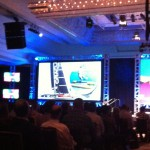

BoxWorks – Der erste Konferenztag
Viele Eindrücke am ersten Konferenztag
Ich hatte mich entschlossen, am ersten Tag aufzufallen, ein bißchen, und daher mein Dirndl zu tragen. Noch immer verbinden viele Amerikaner unser Land mit der Weißwurst- und Lederhosentradition, also bitte sehr, dann liefere ich dies auch 😉
Natürlich hatte ich riesigen Spaß damit und tatsächlich hat nur einer der Teilnehmer festgestellt, dass er Dirndl nur aus München kennt und gar nicht aus Hamburg. Das wäre also auch geklärt.
Pünktlich um 8.30 Uhr ging es auf der BoxWorks los mit den Opening Remarks und anschließender Keynote von Aaron Levie, CEO und Mitgründer von Box. Er sprach mich auf mein Dirndl an (s. Bild) und wollte wissen, ob denn gerade Oktoberfest sei und bedankte sich dann auf Deutsch (!) für mein Kommen von so weit her. Es bestätigt mich, so ein Dirndl verhilft schneller zu Kontakten.
Mit immerhin erst 28 Jahren lieferte Levie zweieinhalb Stunden beste Unterhaltung auf sehr hohem, auch fachlichem Niveau. Er steckt voller Energie und brachte es fertig, seine Visionen dem Publikum glaubhaft zu vermitteln.
Einige Beobachter dieser Fachbranche interpretieren seine Aussagen und Aktionen mit Box als Angriff auf Microsoft, was natürlich auch aufgrund Levie’s kleiner Seitenhiebe auf den Softwareriesen (es laufen ja bereits Wetten auf den neuen CEO) unterstützt wurde. Keiner der Fachleute zweifelt an dem erfolgreichen Konzept von Box. Es lohnt sich also, diesen jungen Cloud-Businessman „im Auge zu behalten“.
Als sehr angenehm empfand ich Levies humoriges Auftreten. Er fügte seiner Rede nicht nur Witze zu Dritten bei, sondern durchaus auch über sich selbst. Seine Kritikfähigkeit kam deutlich zum Ausdruck. Die neuen Cloud-Features, die er vorstellte, waren tatsächlich eine Premiere für alle und zeigen deutliche Verbesserungen. Informationen werden noch stärker „at the center of your business“ sein, das Zusammenführen verschiedener Nutzer noch einfacher und Kosteneffizienz und „simplicity“ garantiert.
Der starke Einbezug aller Geschäftspartner und Kunden in Levies Rede wirkte extrem wertschätzend und vermittelte den Eindruck echter, gelebter Geschäftsbeziehungen. Wie schon von mir erwähnt, er ist erst 28 Jahre alt!

Nach dem Lunch mit vielen neuen Kontakten begab ich mich in eine sogenannte Super Session zum Thema „The future of collaboration“ anhand des Tools Box Notes. Mir fiel sofort auf, dass das Publikum hier in eher mittlerem Alter war; die Jüngeren interessierten sich mehr für die Vorträge zu App-Neuerungen.
Mit Box Notes soll transparent und in-real-time Zusammenarbeit ermöglicht werden (mehr dazu in einem späteren Artikel). Kollaboration mit E-Mail umsetzen zu wollen, wurde als primitive Sichtweise bezeichnet. Viele Verantwortliche lassen sich von ihren Mitarbeitern noch immer vom Tagesgeschäft berichten, obwohl dies für alle viel Zeit kostet. Anstatt diese Zeit in Meetings zu vergeuden oder Mitarbeiter vortragen zu lassen, können alle Informationen längst jederzeit und von überall her individuell abgerufen werden. So teilen heute viele das Wissen statt wie früher nur einige wenige, denn Wissen sollte mehr denn je für jeden Firmenangehörigen verfügbar sein.
Natürlich zwingen solche neuen Tools die Unternehmen, ihre Arbeitsweise komplett zu ändern. Als Mrs. Paperless erlebe ich bei meinen Kunden, dass die derzeit vorhandenen Business-Enterprise-Tools die neue Arbeitsweise aber gar nicht unterstützen können. Da soll Box Notes nun helfen.
Zu den Keynotes von Nicholas Carr und Whitney Bouck folgen noch gesonderte Artikel.
Fazit des ersten Tages
Ich komme mir aufgrund der Programmfülle schon vor wie nach fünf Tagen Konferenz. Zusammenarbeit zählt heute in allen Branchen mehr denn je sowie Content und dessen Verfügbarkeit. Noch vor fünf Jahren haben wir uns Geschäftsreisen ohne Laptop nicht vorstellen können und heute werden ganze Unternehmen über iPads gesteuert. Wir gewöhnen uns an Veränderungen schneller als gedacht.
Mit sehr viel Input, guten neuen Kontakten und tollen Interviews freue ich mich auf den zweiten Konferenztag!
Weitere Artikel

Gar nicht lean ist auch mal gut
Das schlanke, entschlackte, effiziente Büro ist meine Leidenschaft. Doch vor einiger Zeit habe ich erfahren, dass es manchmal gut ist, nicht lean zu sein, nicht auf die „schlanke Linie“ zu achten. Ich war eingeladen, einen …

Checkliste Reisen und Arbeiten
Immer wieder habe ich gemerkt, dass auf Reisen generell zu viel einpacke, dafür aber wichtige Kleinigkeiten, die das Leben wirklich leichter machen, gern mal vergesse. Da ich immer mehr Arbeiten und Reisen verbinde, kann das …